AI for Research Pilot — Summer 2026
PhD Student · MIT AeroAstro · Laboratory for Aviation and the Environment
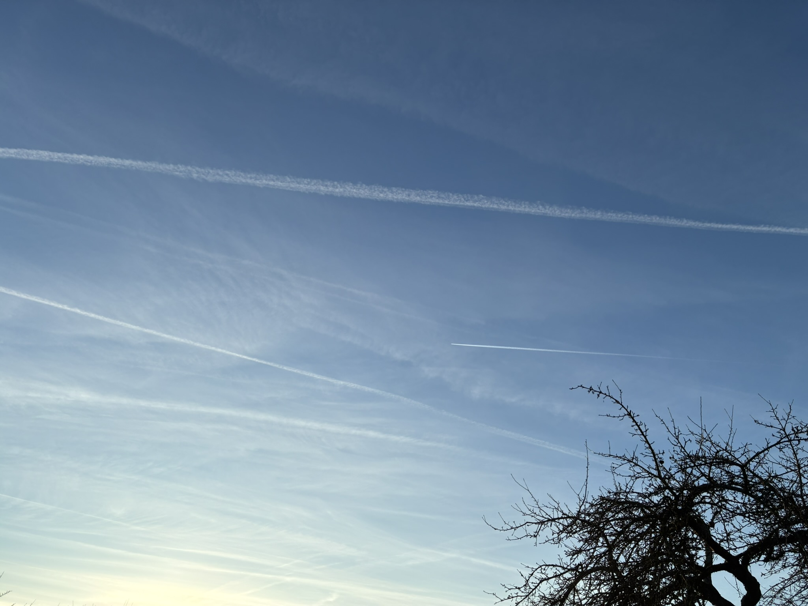
Contrail forming over Esslingen am Neckar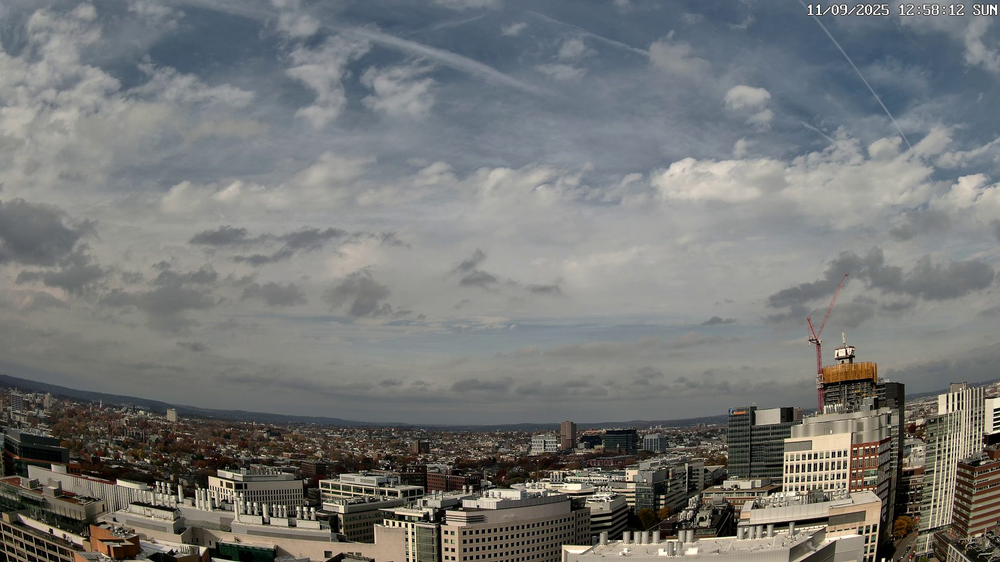
LAE sky camera capturing a cloudy day with contrails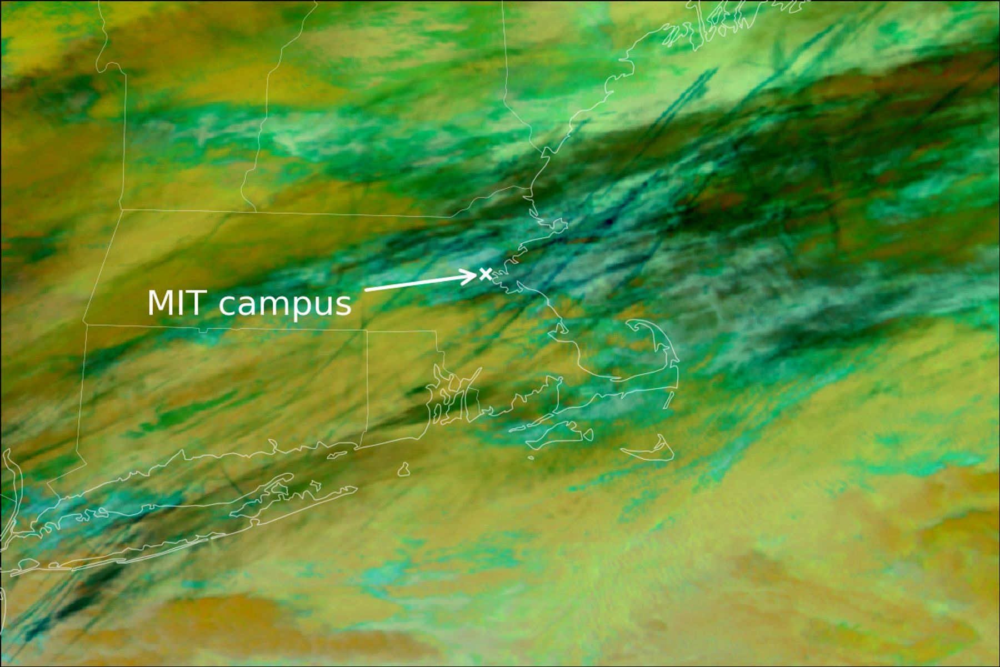
False color image of contrail-heavy VIIRS overpass over Massachusetts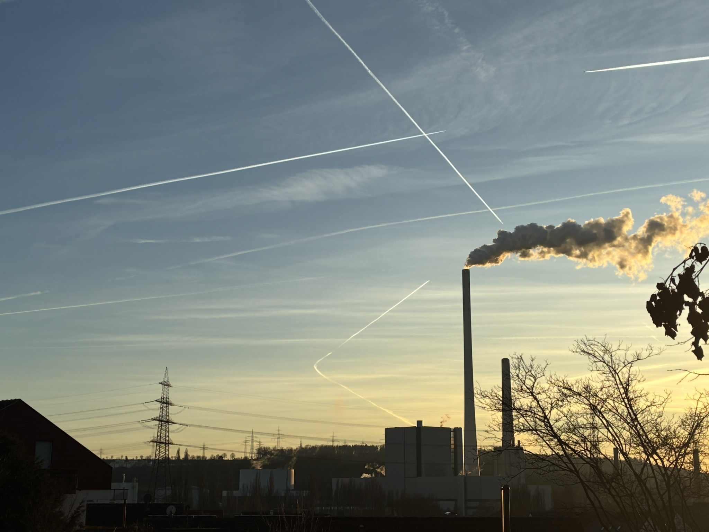
Persistent contrails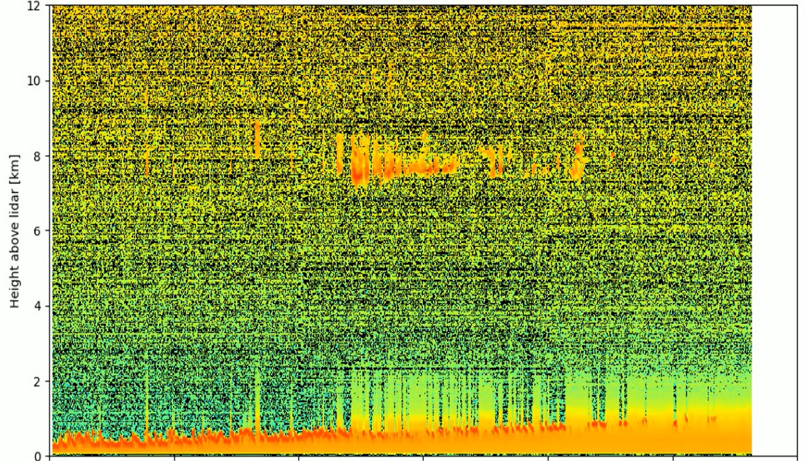
Lidar backscatter profile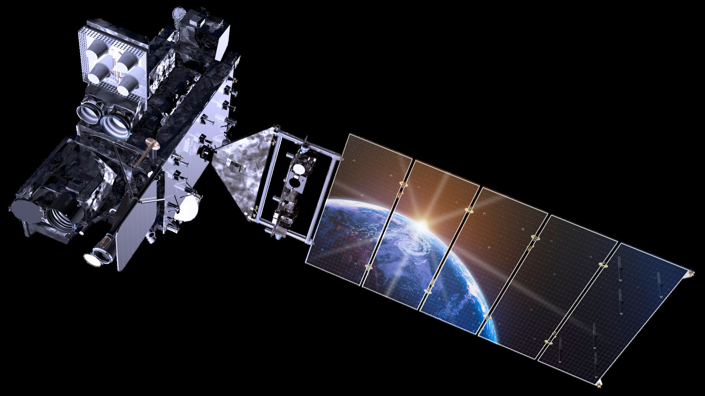
GOES-16 ABI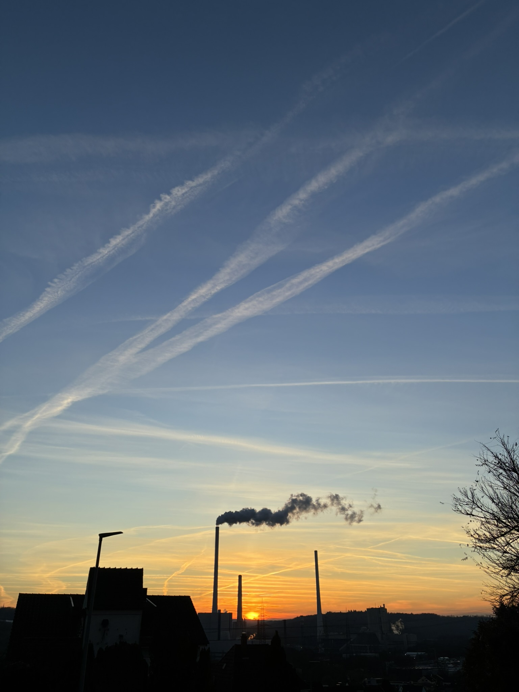
Contrail spreading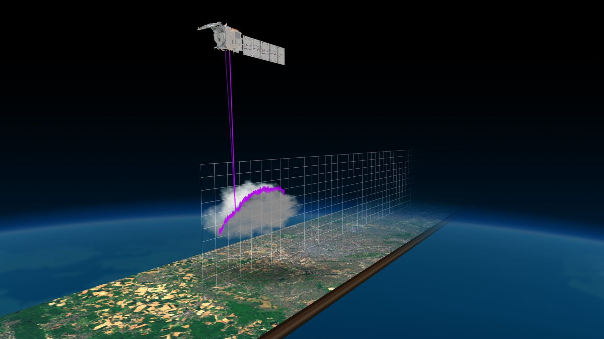
EarthCARE lidar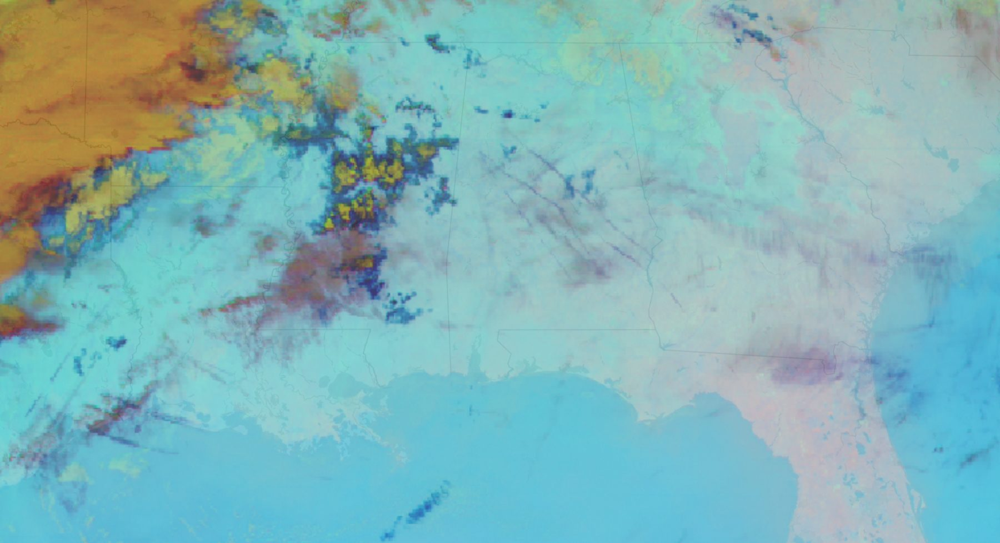
False color GOES ABI image over the Southern US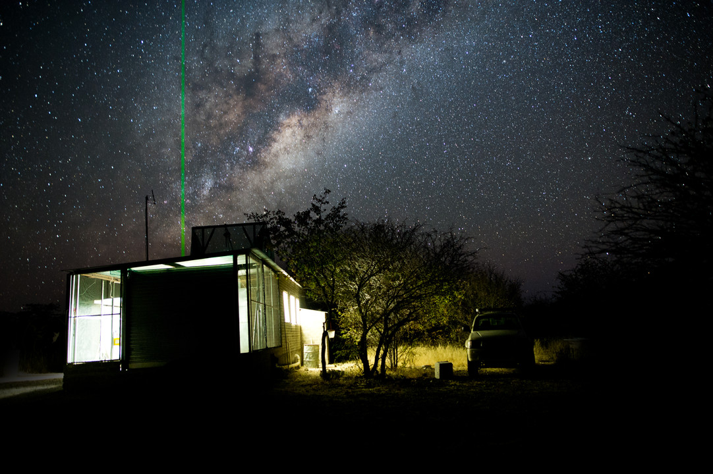
Micro-pulse lidar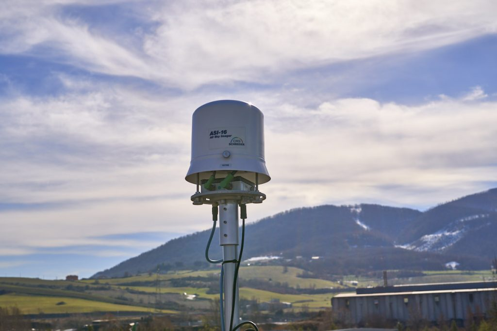
All-sky imager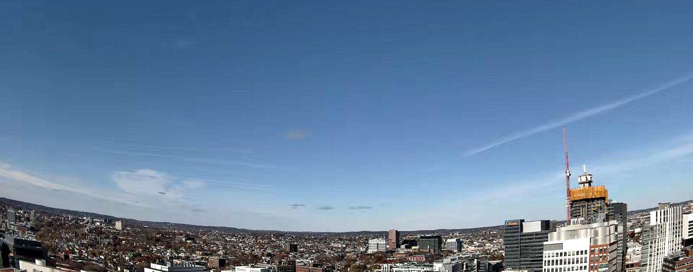
LAE sky camera capturing a clear day with some contrails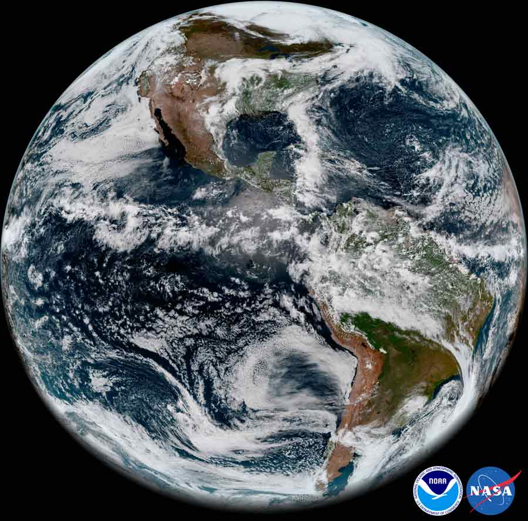
GOES-17 ABI Full Disk image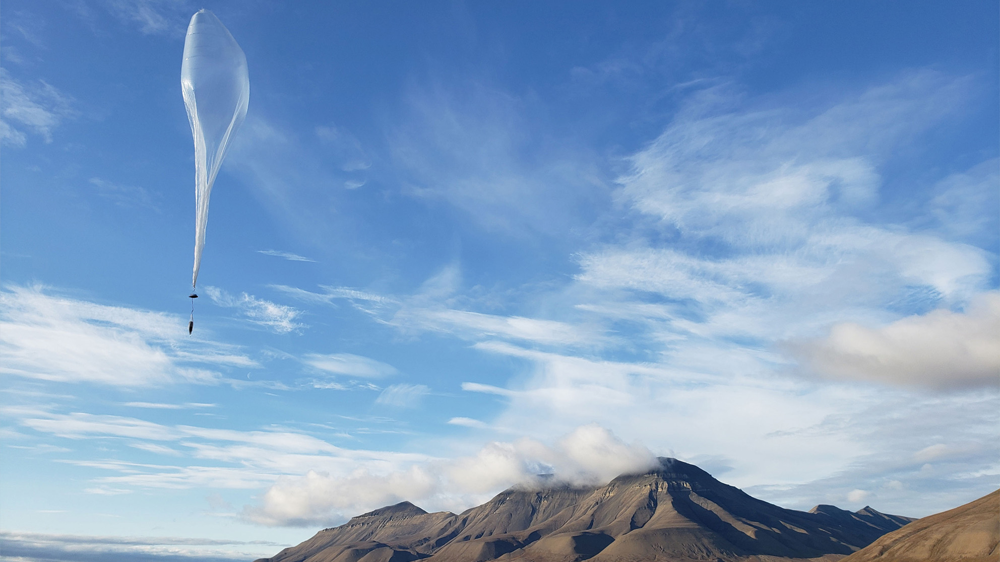
WindBorne radiosondeContrails — those white lines aircraft trace across the sky — are more than a visual curiosity. They are a significant component of aviation's climate impact, and understanding atmospheric conditions is key to their mitigation.
Persistent contrails form in ice-supersaturated atmospheric layers and can last for hours, interacting with Earth's radiative budget. While individual contrails can be cooling or warming, their net effect is warming — making them a major component of aviation's total climate footprint.
Contrail avoidance — small vertical flight deviations to skirt ice-supersaturated layers — can dramatically reduce persistent contrail formation. The additional fuel burn is small compared to the potential climate benefit. But it requires confident, real-time knowledge of atmospheric conditions.
Current contrail simulations show inconsistencies — between models, and between models and observations. Observational data struggles with spatial/temporal trade-offs, and confidently identifying the absence of a contrail is as hard as detecting one.
I am building a framework that fuses multiple observational platforms — geostationary satellites (GOES ABI), low-Earth orbit imagers (VIIRS), ground cameras, lidars (MPLNET, EarthCARE), and radiosondes (GRUAN, WindBorne) — into a unified 4D dataset. Combined with flight attribution, contrails can be identified, linked across platforms, and tracked over time.
A running log of weekly AI usage and reflections on AI-assisted research progress.
Research progress pages launched. VIIRS detection nearing end of exploration phase. Parallel work between agent and me in full swing.
Read more →Loose design instructions worked better than specifying every detail. Providing documentation upfront keeps sessions focused.
Read more →VIIRS detection spotlight: data splits, bowtie fix, threshold tuning, normalization strategy, and pushing repo to GitHub.
Read more →First time working in parallel on two machines. Leaning on the agent to keep READMEs updated in real time.
Read more →Brainstormed the project in detail. Started first spotlight: VIIRS zero-shot detection with mcast.
Switched to Claude directly. Working with multiple terminals and reading Simon Willison's blog on agentic engineering.
Read more →First impressions working with pi and Claude Sonnet to build this site from scratch.
Read more →Originally from Esslingen am Neckar, Germany, I grew up with a curiosity about how things worked and how they could be improved. I graduated with a B.S. in Aerospace Engineering from the University of Stuttgart in 2023, having spent an exchange semester at KTH Royal Institute of Technology in Stockholm, where my enthusiasm for reducing aviation's climate impact took off.
I came to MIT in 2023, received my S.M. in Aeronautics and Astronautics in 2025, and am now working towards my PhD in the Laboratory for Aviation and the Environment, advised by Prof. Ian A. Waitz.
My research focuses on improving our capabilities to observe contrails — with the goal of better verifying contrail predictions and supporting observation-based contrail avoidance. When I'm not in the lab, you'll find me running along the Charles, playing guitar, or cooking.
Click a milestone on the timeline to fly to it on the map.
Growing up in the Neckar Valley, Germany, with the Swabian Alb in the background.
Graduated from Gymnasium Plochingen — and set sights on aerospace engineering.
Began B.S. in Aerospace Engineering at Campus Vaihingen.
Exchange semester in Stockholm, Sweden — where the passion for aviation's climate impact ignited.
Worked with hydrogen fuel cell startup H2FLY in Untertürkheim on sustainable aviation.
Defended Bachelor Thesis and graduated from the University of Stuttgart.
Began graduate school at MIT in Cambridge, MA, joining the Laboratory for Aviation and the Environment, first under Sebastian Eastham and then under Prof. Ian Waitz.
Received Master of Science from MIT.
Working on the multi-sensor contrail observation framework.